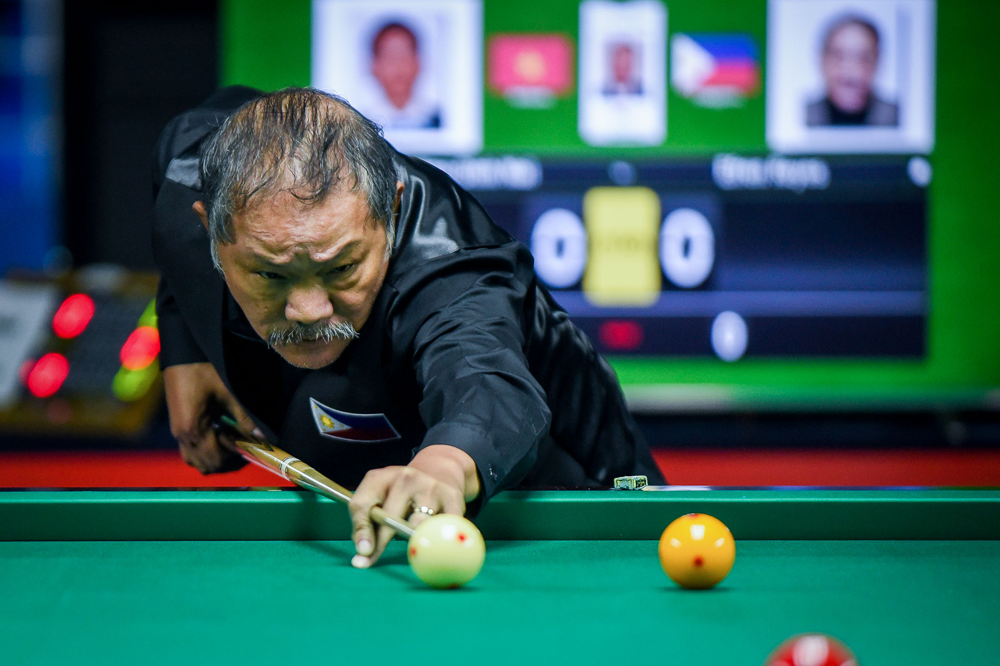

Efren "Bata" Manalang Reyes
a.k.a. "The Magician" and "The Maestro"

Efren "Bata" Reyes preparing to take a shot during the 30th Southeast Asian Games cushion carom held in Manila, Philippines.
Accomplishments and Accolades
Efren Reyes is considered as a legend in the field of billiards winning over 70 international titles. Here are some of what he accomplished:
- First non-American to win the U.S. Open 9-Ball Championship in 1994 after defeating Nick Varner in the finals.
- Named as the Player of the Year in the Billiards Digest Magazine in 1995 and was ranked number one on the United States' Pro Billiards Tour on the following year.
- First to win the televised 1999 World Professional Pool Championship held in Cardiff, Wales.
- First Asian to be inducted into the Billiard Congress of America's Hall of Fame in 2003.
- First player to win WPA world championships in more than one discipline after winning the 2004 WPA World Eight-ball Championship.
- Inducted into the One Pocket Hall of Fame in 2004.
- Awarded with the Philippine Sportswriters Association Sportsman of the Year on three occasions: in 1999, 2001, and 2006
- He was given the Philippine Legion of Honor and was included in the Time Magazine's 60 Asian heroes in 2006.
- He topped the AZ Billiards Money List five times: in 2001, 2002, 2003, 2005 and 2005.
- Four-time World Eight-ball champion, three-time U.S. Open winner, two-time World Pool League winner and 14-time Derby City Classic winner.
Read more about his amazing life stories in his Wikipedia entry.